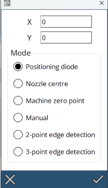
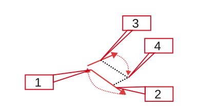
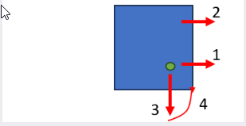
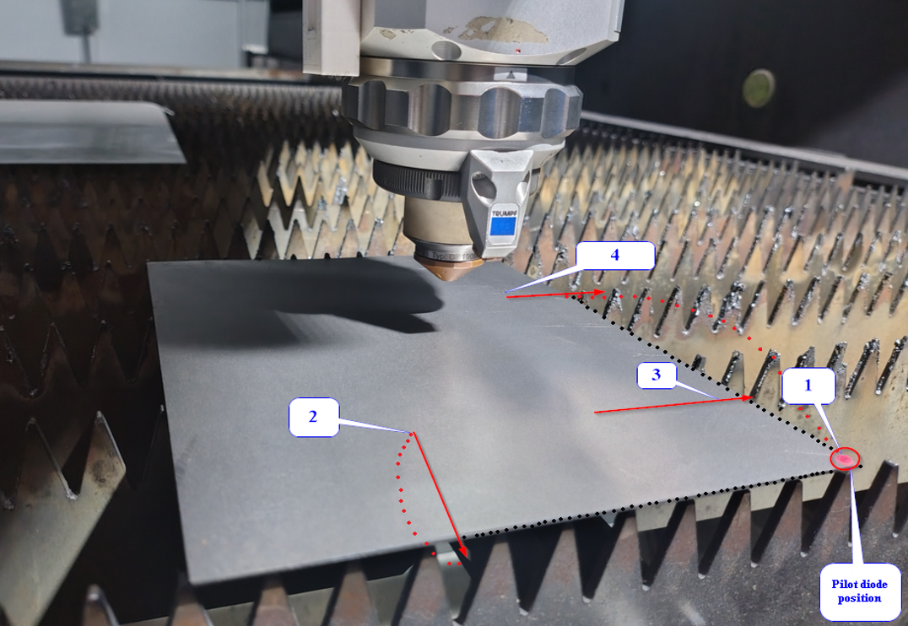

Work offsets
The machine could determine the work offset in multiple ways.

Position diode
The most common way is to jog the green laser pointer to the desired position and press the Set button. The machine will use it as the work offset.
Nozzle center
Especially in the situation when the machine already positioned the nozzle to the zero point this option might be useful. The machine will use the nozzle center as the work offset.
Manual
In special operations or if you work with fixtures this option will give you a possibility to set the work offset manually.
2-point edge detection
This option is useful when you need to set the work offset on the edge of the material. The machine will ask you to jog the nozzle to the first point and automatically determine the corner of the sheet. This function is fast and geared to small parts to be placed on one corner of the sheet.
| The accuracy of the 2-point strategy is limited by the accuracy of the machine and therefore not to be used on a full sheet to be cut. |
The logic works as follows:

-
You select with the laser a position close to the desired zero position.
-
The machine does a corner search in X direction from the position where you started.
-
The machine does a corner search on the closest center between two slats. This will maximize a accurate corner measuring.
-
The machine goes to the corner it found and cuts the part after confirmation.
3-point edge detection
The 3 point method is much more accurate and takes 3 measurement points on a full sheet. It assumes we have a full sheet (>1000x2000) on the table and does three corner searches at x300, x1500 and y300 to find the zero point. It is the preferred method to cut a full sheet.

| If the edge detection is performed on top of a slat it will produce inaccurate results. Therefore the machine picks automatically a position between two slats. |
| Before applying three-point edge detection in the laser machine, the sheet size must be specified in the Flux software. Ensure that the sheet size specified in the program matches the actual sheet loaded in the machine, Make sure that pilot diode is placed in the corner of the sheet |

Selecting the 3-point Edge Detection in the work offset menu, the following operation will be carried out:
-
First, move the cutting head to the pilot diode at the (0,0) position on the sheet edge.
-
The cutting head will move to this position to find the first edge of the sheet.
-
After detecting the first edge in, the cutting head will then move to the second position to find the second edge of the sheet.
-
After detecting the second edge, the cutting head will find the third edge of the sheet (to find the slope of the sheet).
-
Upon confirmation, the head position will automatically move to the start position and executes the cutting process.